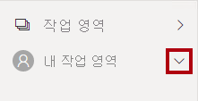
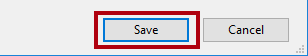
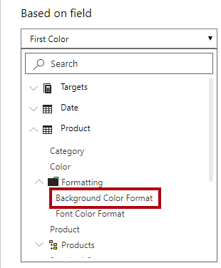
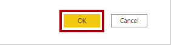
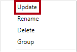

Power BI Desktop에서 보고서 디자인 2부#
이 랩의 예상 완료 시간은 45분입니다.
이 랩에서는 고급 디자인 기능을 통해 판매 분석을 개선합니다.
이 랩에서는 다음 작업을 수행하는 방법을 알아봅니다.
슬라이서 동기화
드릴스루 페이지 만들기
조건부 서식 적용
책갈피 만들기 및 사용
랩 사례#
이 랩은 데이터 준비부터 보고서 및 대시보드로 게시에 이르기까지 배우기 위해 고안된 랩 시리즈 중 하나입니다. 어떤 순서로든 랩을 완료할 수 있습니다. 그러나 여러 랩을 진행하려는 경우 다음 순서를 따르는 것이 좋습니다.
Power BI Desktop에서 데이터 준비
Power BI Desktop에서 데이터 로드
Power BI에서 데이터 모델 디자인
Power BI Desktop에서 DAX 계산 만들기 1부
Power BI Desktop에서 DAX 계산 만들기, 2부
Power BI Desktop에서 보고서 디자인, 1부
Power BI Desktop에서 보고서 디자인, 2부
AI 시각적 개체를 사용하여 데이터 분석
Power BI 대시보드 만들기
행 수준 보안 적용
연습 1: 슬라이서 동기화 구성#
이 연습에서는 보고서 페이지 슬라이서를 동기화합니다.
작업 1: 시작하기 – 로그인#
이 작업에서는 Power BI에 로그인하여 랩용 환경을 설정합니다.
중요: 이미 Power BI에 로그인한 경우 다음 작업부터 진행하세요.
작업 표시줄에서 Microsoft Edge를 열려면 Microsoft Edge 프로그램 바로 가기를 클릭합니다.

Microsoft Edge 브라우저 창에서 https://powerbi.microsoft.com으로 이동합니다.
팁: Microsoft Edge 즐겨찾기 표시줄에서 Power BI 서비스 즐겨찾기를 사용할 수도 있습니다.
로그인 오른쪽 상단 모서리에 위치)을 클릭합니다.

로그인 프로세스를 완료합니다.
Microsoft Edge에서 로그인 상태를 유지하라는 메시지가 표시되면 예를 클릭합니다.
Microsoft Edge 브라우저 창의 Power BI 서비스 탐색 창에서 내 작업 영역을 확장합니다.

Microsoft Edge 브라우저 창을 열어 둡니다.
작업 2: 시작하기 – 보고서 열기#
이 작업에서는 시작 보고서를 열어 랩용 환경을 설정합니다.
중요: 이전 랩에서 계속 진행해 온 경우(그리고 해당 랩을 성공적으로 완료한 경우) 이 작업을 완료하지 마세요. 대신, 다음 작업부터 진행하세요.
Power BI Desktop을 열려면 작업 표시줄에서 Microsoft Power BI Desktop 바로 가기를 클릭합니다.

시작 창을 닫으려면 창 왼쪽 위의 X를 클릭합니다.

Power BI 서비스에 로그인하려면 오른쪽 위에 있는 로그인을 클릭합니다.

Power BI 서비스 로그인하는 데 사용한 것과 동일한 계정을 사용하여 로그인 프로세스를 완료합니다.
시작 Power BI Desktop 파일을 열려면 파일 리본 탭을 클릭하여 Backstage 뷰를 엽니다.
보고서 열기를 선택합니다.

보고서 찾아보기를 클릭합니다.

열기 창에서 D:\PL300\Labs\07-design-report-in-power-bi-desktop-enhanced\Starter 폴더로 이동합니다.
Sales Analysis 파일을 선택합니다.
열기를 클릭합니다.

열려 있는 정보 창을 모두 닫습니다.
파일 복사본을 만들려면 파일 리본 탭을 클릭하여 Backstage 뷰를 엽니다.
다른 이름으로 저장을 선택합니다.

변경 내용을 적용하라는 메시지가 표시되면 적용을 클릭합니다.

다른 이름으로 저장 창에서 D:\PL300\MySolution 폴더로 이동합니다.
저장을 클릭합니다.

작업 3: 슬라이서 동기화#
이 작업에서는 연도 및 지역 슬라이서를 동기화합니다.
Power BI Desktop에서 보고서 디자인, 1부 랩에서 만든 보고서 작성을 계속합니다.
Power BI Desktop의 개요 페이지에서 Year 슬라이서를 FY2018로 설정합니다.
My Performance 페이지로 이동하면 Year 슬라이서가 다른 값으로 설정되어 있음을 알 수 있습니다.
슬라이서가 동기화되지 않은 경우에는 데이터가 잘못 표현될 수 있고 보고서 사용자에게 불편을 유발할 수 있습니다. 이제 보고서 슬라이서를 동기화합니다.
개요 페이지로 돌아가 Year 슬라이서를 선택합니다.
보기 리본 탭의 창 표시 그룹에서 슬라이서 동기화를 클릭합니다.

시각화 창의 왼쪽에 있는 슬라이서 동기화 창의 동기화를 나타내는 두 번째 열에서 Overview 페이지와 My Performance 페이지의 확인란을 선택합니다.

Overview 페이지에서 Region 슬라이서를 선택합니다.
슬라이서를 Overview 페이지 및 Profit 페이지와 동기화합니다.

다른 필터 옵션을 선택한 다음, 동기화된 슬라이서가 동일한 선택 사항으로 필터링되는 것을 확인하여 슬라이서 동기화를 테스트합니다.
슬라이서 동기화 페이지를 닫으려면 창의 오른쪽 위에 있는 X를 클릭합니다.

연습 2: 드릴스루 구성#
이 연습에서는 새 페이지를 만들고 드릴스루 페이지로 구성합니다. 디자인을 완료하면 페이지는 다음과 같은 모습이 됩니다.

작업 1: 드릴스루 페이지 만들기#
이 작업에서는 새 페이지를 만들고 이것을 드릴스루 페이지로 구성합니다.
Product Details라는 새 보고서 페이지를 추가합니다.

Product Details 페이지 탭을 마우스 오른쪽 단추로 클릭하고 페이지 숨기기를 선택합니다.

보고서 사용자는 드릴스루 페이지로 직접 이동할 수 없습니다. 다른 페이지의 시각적 개체에서 액세스해야 합니다. 이 랩의 마지막 연습에서 페이지로 드릴스루하는 방법을 알아봅니다.
시각화 창 아래의 드릴스루 섹션에서 여기에 드릴스루 필드 추가상자에 Product | Category 필드를 추가합니다.
랩에서는 약식 표기법을 사용하여 필드를 참조합니다. 다음과 같이 표시됩니다. Product | Category. 이 예에서 Product은 테이블 이름이고 Category는 필드 이름입니다.

드릴스루 페이지를 테스트하려면 드릴스루 필터 카드에서 Bikes를 선택합니다.

보고서 페이지의 왼쪽 위에 화살표 단추가 표시된 것을 확인합니다.

드릴스루 웰/영역에 필드를 추가하면 단추가 자동으로 추가됩니다. 보고서 사용자는 이 단추를 사용하여 드릴스루한 페이지에서 되돌아갈 수 있습니다.
페이지에 카드 시각적 개체를 추가한 다음 크기를 조정하고 단추 오른쪽에 배치하여 페이지의 나머지 너비를 채웁니다.


Product | Category 필드를 카드 시각적 개체로 끌어옵니다.
시각적 개체에 대한 서식 옵션을 구성한 다음, 범주 레이블 속성을 끔으로 설정합니다.

효과 > 배경 색상 속성을 연한 회색으로 설정합니다.

페이지에 테이블 시각적 개체를 추가한 다음 크기를 조정하고 카드 시각적 개체 아래에 배치하여 페이지의 나머지 공간을 채웁니다.

시각적 개체에 다음 필드를 추가합니다.
Product | Subcategory
Product | Color
Sales | Quantity
Sales | Sales
Sales | Profit Margin
시각적 개체에 대한 서식 옵션을 구성한 다음, 값 섹션에서 텍스트 크기 속성을 20pt로 설정합니다.
드릴스루 페이지의 디자인이 거의 완료되었습니다. 다음 연습에서 조건부 서식을 사용하여 페이지를 개선할 것입니다.
연습 3: 조건부 서식 추가#
이 연습에서는 조건부 서식으로 드릴스루 페이지를 향상시킵니다. 디자인을 완료하면 페이지는 다음과 같은 모습이 됩니다.

작업 1: 조건부 서식 추가#
이 작업에서는 조건부 서식을 사용하여 드릴스루 페이지를 향상시킵니다.
테이블 시각적 개체를 선택합니다.
시각화 창에서 Profit Margin 값의 아래쪽 화살표를 클릭하고 조건부 서식 | 아이콘을 선택합니다.

아이콘 – Profit Margin 창의 아이콘 레이아웃 드롭다운 목록에서 데이터의 오른쪽을 선택합니다.

중간 규칙을 삭제하려면 노란색 삼각형의 왼쪽에서 X를 클릭합니다.

첫 번째 규칙(빨간색 다이아몬드)을 다음과 같이 구성합니다.
두 번째 컨트롤에서 값을 제거합니다.
세 번째 컨트롤에서 숫자를 선택합니다.
다섯 번째 컨트롤에서 0을 입력합니다.
여섯 번째 컨트롤에서 숫자를 선택합니다.
두 번째 규칙(녹색 원)을 다음과 같이 구성합니다.
두 번째 컨트롤에서 0을 입력합니다.
세 번째 컨트롤에서 숫자를 선택합니다.
다섯 번째 컨트롤에서 값을 제거합니다.
여섯 번째 컨트롤에서 숫자를 선택합니다.

이익률 값이 0 미만인 경우 빨간색 다이아몬드를 표시하고 값이 0보다 크거나 같으면 녹색 원을 표시하는 것으로 규칙을 해석할 수 있습니다.
확인을 클릭합니다.

테이블 시각적 개체에서 올바른 아이콘이 표시되는지 확인합니다.

Color 필드의 배경색 조건부 서식을 구성합니다.
배경색 - Color 창의 서식 스타일 드롭다운 목록에서 필드 값을 선택합니다.
이 값은 어떤 필드를 기반으로 해야 하나요? 드롭다운 목록에서 Product | Formatting | Background Color Format을 선택합니다.

확인을 클릭합니다.

이전 단계를 반복하여 Product | Formatting | Font Color Format 필드를 사용하여 Color 필드에 대한 글꼴 색 조건부 서식을 구성합니다.
배경색과 글꼴 색은 Power BI Desktop에서 데이터 준비 랩에서 사용했던 ColorFormats.csv 파일에서 가져온 다음, Power BI Desktop에서 데이터 로드 랩에서 만든 제품 쿼리와 통합한 것입니다.
연습 4: 책갈피 및 단추 추가#
이 연습에서는 단추를 사용하여 실적 페이지를 개선하여 보고서 사용자가 표시할 시각적 개체 유형을 선택할 수 있도록 합니다. 디자인을 완료하면 페이지는 다음과 같은 모습이 됩니다.

작업 1: 책갈피 추가#
이 작업에서는 두 개의 책갈피를 추가하고 월별 판매량/대상 시각적 개체를 각각 표시합니다.
My Performance 페이지로 이동합니다.
보기 리본 탭의 창 표시 그룹에서 책갈피를 클릭합니다.

보기 리본 탭의 창 표시 그룹에서 선택 영역을 클릭합니다.
선택 영역 창에서 월별 매출 및 목표 항목 중 하나 옆에서 눈 모양 아이콘을 클릭하여 시각적 개체를 숨깁니다.

책갈피 창에서 추가를 클릭합니다.

책갈피의 이름을 바꾸려면 책갈피를 두 번 클릭합니다.
표시되는 차트가 가로 막대형 차트인 경우 책갈피 이름을 Bar Chart ON으로 바꾸고 그렇지 않은 경우 책갈피 이름을 Column Chart ON으로 바꿉니다.
책갈피를 편집하려면 책갈피 창에서 책갈피 위로 커서를 가져간 다음 줄임표를 클릭하고 데이터를 선택합니다.

데이터 옵션을 사용하지 않도록 설정하면 책갈피는 현재 필터 상태를 사용하지 않습니다. 이 기능은 중요합니다. 이 옵션을 비활성화하지 않는 경우 책갈피가 연도 슬라이서에 의해 현재 적용되어 있는 필터로 영구 고정되기 때문입니다.
책갈피를 업데이트하려면 줄임표를 다시 클릭하고 업데이트를 선택합니다.

다음 단계에서는 두 번째 책갈피를 만들고 구성하여 두 번째 시각적 개체를 표시합니다.
선택 영역 창에서 두 월별 매출 및 목표 항목의 표시 여부를 토글합니다.
즉, 표시된 시각적 개체를 숨기고 숨겨진 시각적 개체를 표시하도록 설정합니다.

두 번째 책갈피를 만들고 적절한 이름을 지정합니다(Column Chart ON 또는 Bar Chart ON).

필터를 무시(데이터 옵션 해제)하고 책갈피를 업데이트하도록 두 번째 책갈피를 구성합니다.
선택 창에서 두 시각적 개체를 모두 표시하려는 경우 숨겨진 시각적 개체만 표시하면 됩니다.
두 시각적 개체가 다중 카드 시각적 개체 아래에 배치되고 서로 완전히 중첩되도록 크기와 위치를 조정합니다.
팁: 중첩된 시각적 개체를 선택하려면 선택 영역 창에서 해당 시각적 개체를 선택합니다.

책갈피 창에서 각 책갈피를 선택하면 둘 중 하나의 시각적 개체만 표시되는 것을 알 수 있습니다.
보고서 디자인의 다음 단계는 보고서 사용자가 책갈피를 선택하는 데 사용할 수 있는 단추 두 개를 페이지에 추가하는 것입니다.
작업 2: 단추 추가#
이 작업에서는 두 개의 단추를 추가하고 각 단추에 책갈피 작업을 할당합니다.
삽입 리본의 요소 그룹에서 단추를 클릭하고 비어 있음을 선택합니다.

연도 슬라이서 바로 아래에 단추를 배치합니다.
단추를 선택하고 서식 단추 창에서 일반을 클릭한 후 제목 속성을 켜기로 설정합니다.

제목 섹션을 확장한 다음 텍스트 상자에 막대형 차트를 입력합니다.
배경 섹션을 확장한 다음 보색을 사용하여 배경색을 설정합니다.
단추를 클릭하고 작업 속성을 켬으로 설정합니다.

작업 섹션을 확장하고 형식 드롭다운 목록을 책갈피로 설정합니다.
책갈피 드롭다운 목록에서 Bar Chart ON을 선택합니다.

복사 및 붙여넣기를 사용하여 단추의 복사본을 만들고 다음과 같이 새 단추를 구성합니다.
팁: 복사 및 붙여넣기 작업의 바로 가기 명령은 Ctrl+C와 Ctrl+V를 차례로 사용하는 것입니다.
단추 텍스트 속성을 세로 막대형 차트로 설정합니다.
작업 섹션에서 책갈피 드롭다운 목록을 Column Chart ON으로 설정합니다.
이제 판매 분석 보고서 디자인이 완료되었습니다.
작업 3: 보고서 게시#
이 작업에서는 보고서를 게시합니다.
Overview 페이지를 선택합니다.
연도 슬라이서에서 FY2020을 선택합니다.
지역 슬라이서에서 모두 선택을 선택합니다.
Power BI Desktop 파일을 저장합니다.
Power BI 서비스에 게시하기 전에 파일을 항상 저장해야 합니다.
홈 리본 탭의 공유 그룹 내에서 게시를 클릭합니다.

Power BI에 게시 창에서 내 작업 영역이 선택된 것을 확인할 수 있습니다.
보고서를 게시하려면 선택을 클릭합니다.

데이터 세트를 바꾸라는 메시지가 표시되면 바꾸기를 클릭합니다.
게시가 성공하면 확인을 클릭합니다.

Power BI Desktop을 닫습니다.
다음 연습에서 Power BI 서비스에서 보고서를 살펴봅니다.
연습 5: 보고서 살펴보기#
이 연습에서는 Power BI 서비스의 보고서를 살펴봅시다.
작업 1: 보고서 살펴보기#
이 작업에서는 Power BI 서비스의 보고서를 살펴봅시다.
Microsoft Edge 브라우저 창의 Power BI 서비스 내 탐색 창에서 내 작업 영역을 선택한 후 판매 분석 보고서를 클릭합니다.
드릴스루 보고서를 테스트하려면 개요 페이지에서 Category별 Quantity 시각적 개체에서 의류 표시줄을 마우스 오른쪽 단추로 클릭한 다음, 드릴스루 | Product Details를 선택합니다.

제품 세부 정보 페이지는 의류에 대한 것임을 알 수 있습니다.
원본 페이지로 돌아가려면 페이지 왼쪽 위 모서리에서 화살표 단추를 클릭합니다.
내 실적 페이지를 선택합니다.
각 단추를 클릭하면 다른 시각적 개체가 표시되는 것을 알 수 있습니다.
작업 2: 완료#
이 작업에서는 랩을 완료합니다.
작업 영역으로 돌아오려면 창 웹 페이지에 가로로 표시된 배너에서 내 작업 영역을 클릭합니다.

Microsoft Edge 브라우저 창을 열어 둡니다.